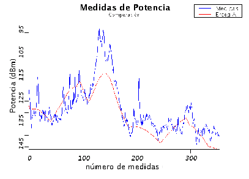

También se aplicó el modelo de Erceg en la zona de estudio como
parte del proceso de prueba y validación de SAPO. Si bien
el modelo fue desarrollado para entornos suburbanos puede ser
también aplicado en entornos urbanos, como ya se mencionó en
5.2. El mismo incluye el caso en que la altura de la
radiobase es baja, por lo cual en ese aspecto se estaría dentro de
las hipótesis, aunque la altura del móvil se encuentra por debajo
del rango recomendado para el modelo.
Los datos de media y varianza del error obtenido de comparar los
resultados con las medidas para los parámetros por defecto de las
zonas A y B pueden verse en la tabla 12.2. En los
parámetros aleatorios del modelo se usó un factor de seguridad de 1.
Tabla 12.2:
Media y desviación estándar del error para el modelo de
Erceg
cat. A
cat. B
Ruta
(dB)
(dB)
(dB)
(dB)
route00
-0.78
6.24
0.07
6.26
route01
-2.69
5.70
-1.92
5.71
route02
-3.92
6.37
-3.15
6.37
Se obtuvieron resultados muy favorables (mejores que en el caso de
Okumura-Hata); se lograron errores con menor varianza con los
parámetros del tipo de terreno A, que es el que modela las
condiciones menos favorables para la propagación. Cabe destacar que
los tiempos de ejecución de los cálculos para este modelo son muy
cortos dada la simplicidad de su implementación. Esto lo hace un
modelo muy efectivo, ya que el compromiso exactitud-tiempo es muchas
veces difícil de equilibrar. En la gráfica comparativa de la figura
12.4 puede verse los resultados para la ruta 1 con
tipo de terreno A. Se aprecia cómo la predicción ajusta muy bien a
las medidas, pero no acompaña las pequeñas variaciones de las
mismas; esto es porque el modelo no toma en cuenta la altura del
terreno (considera alturas relativas) ni los edificios.
Figura 12.4:
Comparación entre las medidas y las estimaciones para la
ruta 1 del modelo de Erceg

Lamentablemente no se cuenta con reportes de otras fuentes de
resultados de la aplicación de este modelo en la zona de Munich.
Solamente a fin de tener una vaga idea de cómo puede ser su
performance en una región urbana y verificar que no sea muy
diferente a la obtenida, se consultó un trabajo de investigación
[19] en donde se presentan resultados de aplicar
el modelo en Cambrige, UK, con los parámetros de la zona tipo B a
una frecuencia de 3.56 GHz. Allí se obtuvo un error de media 4.2 y
varianza 10.1, valores del orden de los obtenidos por SAPO
con los datos de Munich.
Siguiente:COST231-Walfisch-Ikegami Subir:Performance de los modelos Anterior:Okumura-Hata-COST231Índice General
SAPO